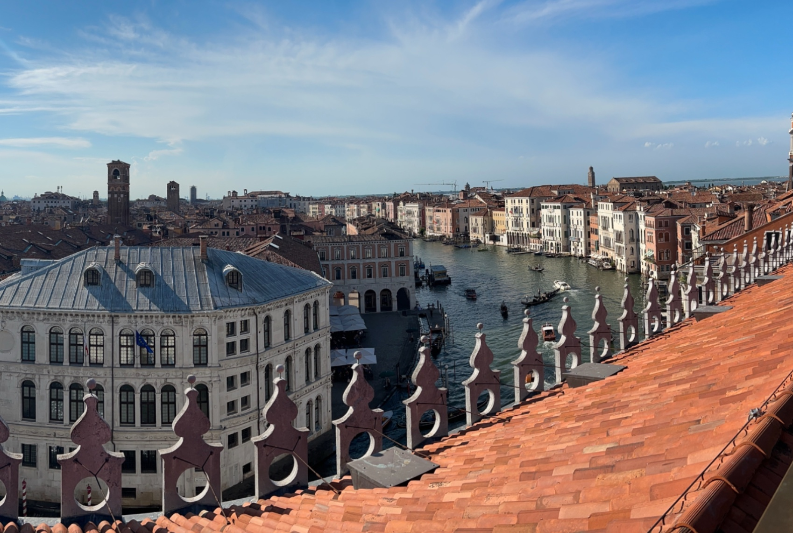
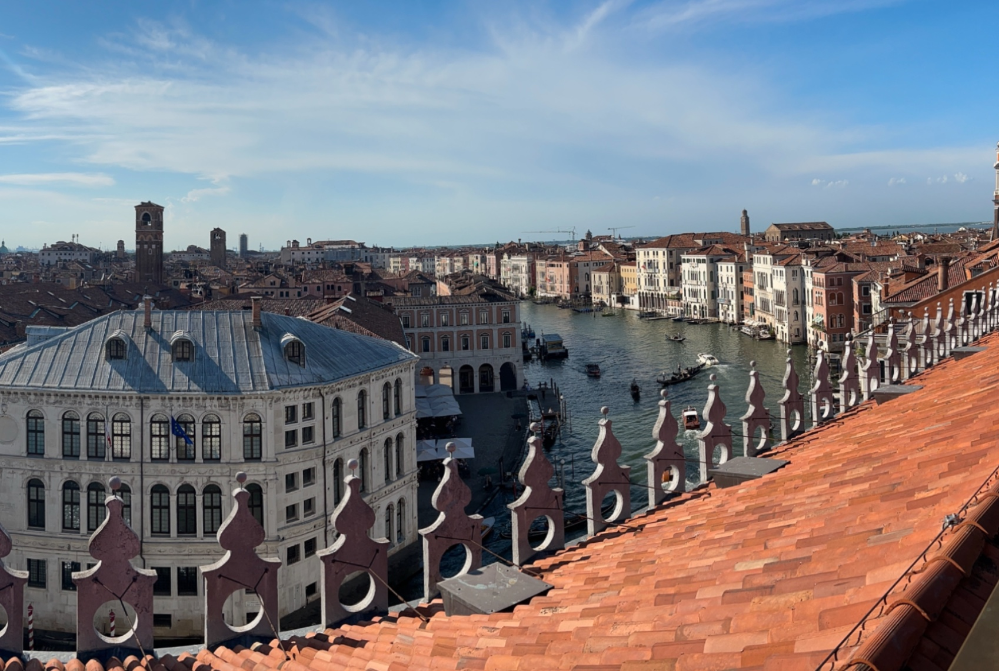

I took sets of images with projective transformations. This is done through keeping the center of projection the same and rotating the camera.
 



For each correspondence point pair (x, y) → (x', y'), I set up two equations: A contains the coefficients based on (x, y) coordinates, and b contains the target coordinates (x', y'). The system Ah = b is solved with least squares to obtain the H. The general system of equation is:

Recovered homography H for mainstack

Correspondents for other images:


For Nearest Neighbor Interpolation, I rounded coordinates to the nearest pixel value while for Bilinear Interpolation I used weighted average of four neighboring pixels. The results are pretty similar. However Bilinear Interpolation took longer than Nearest Neighbor Interpolation to process.

To create a blended image mosaic, I first computed the homography between the images using corresponding points and determined the full canvas size to fit all of them. I applied an offset to handle negative coordinates and warped the second image into the canvas while keeping the first image unwarped. For blending, I created masks for valid pixels in each image using weighted averaging. For overlapping pixels, I computed a weighted sum of their values divided by the sum of the weights, while non-overlapping pixels retained their original values. This allowed me to achieve a smoother transition between images.